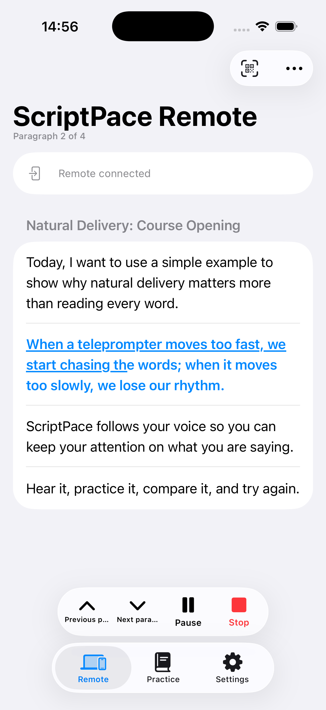
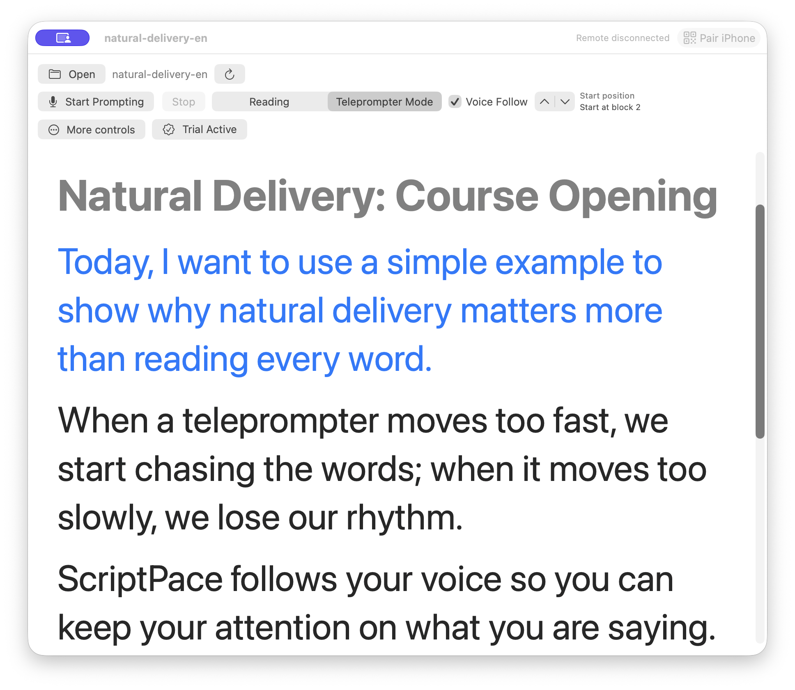
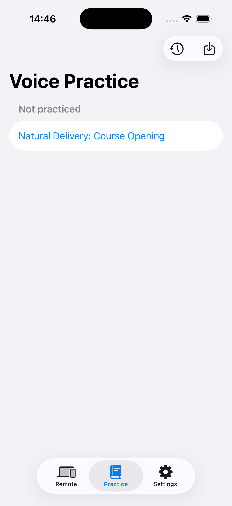
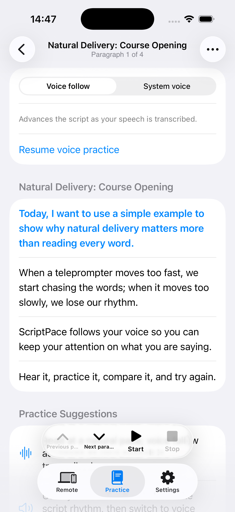
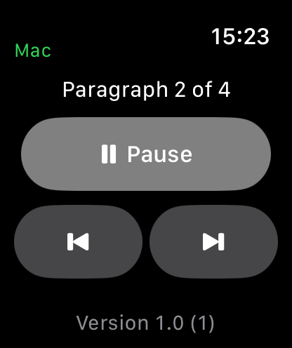

Hear it
Let Mac read the script aloud and listen for its natural rhythm.
ScriptPace · 稿随
Let your voice move the script. Hear it first, practice it, and keep your attention on what you are saying.
When a teleprompter moves too fast, we start chasing the words; when it moves too slowly, we lose our rhythm.
Paragraph 2 · FollowingYou prepared what you want to say. The teleprompter should not become another thing to manage.
It scrolls too fast, so you chase the words. It scrolls too slowly, so you wait. A pause, a lost line, or another take can pull your attention away from the message.
ScriptPace makes the path calmer: let your voice move the script, step back when a take needs another try, and keep going when the rhythm changes.
Hear it · Practice it · Try again
Start by finding the rhythm of the script. Then practice at your pace and stay with the message when recording begins.
Let Mac read the script aloud and listen for its natural rhythm.
Practice on iPhone before recording and become familiar with each paragraph.
Use Voice Follow on Mac so the script responds to your natural pace.
Move back when a take needs another try, or adjust your place from Remote.
One product, three natural companions
A floating teleprompter, system speech, and Voice Follow keep your attention on delivery.
Scan to connect to Mac and adjust your paragraph during practice or recording without breaking flow.
When iPhone is out of reach, use the Digital Crown or paragraph controls. Watch is a free companion.
Real product surfaces
The same story moves from Mac to iPhone to Apple Watch, with English and Chinese pages matched to their own product screens.





ScriptPace Pro
Mac, iPhone, and Apple Watch are free to download. One Pro purchase works across supported Apple platforms.
For short projects and flexible use. Auto-renewing, month to month.
For regular practice, teaching, and creation, with a lower effective monthly cost.
One purchase permanently unlocks the current ScriptPace Pro product line.
No application account. No stored raw microphone audio. Local-first processing where supported.